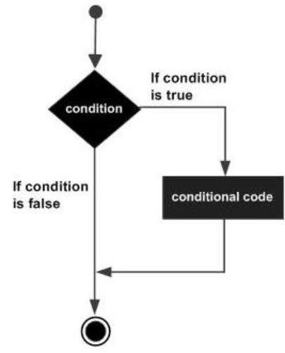

- Batch Script Tutorial
- Batch Script - Home
- Batch Script - Overview
- Batch Script - Environment
- Batch Script - Commands
- Batch Script - Files
- Batch Script - Syntax
- Batch Script - Variables
- Batch Script - Comments
- Batch Script - Strings
- Batch Script - Arrays
- Batch Script - Decision Making
- Batch Script - Operators
- Batch Script - DATE & TIME
- Batch Script - Input / Output
- Batch Script - Return Code
- Batch Script - Functions
- Batch Script - Process
- Batch Script - Aliases
- Batch Script - Devices
- Batch Script - Registry
- Batch Script - Network
- Batch Script - Printing
- Batch Script - Debugging
- Batch Script - Logging
- Batch Script Resources
- Batch Script - Quick Guide
Batch Script - If Statement
The first decision-making statement is the ‘if’ statement. The general form of this statement in Batch Script is as follows −
if(condition) do_something
The general working of this statement is that first a condition is evaluated in the ‘if’ statement. If the condition is true, it then executes the statements. The following diagram shows the flow of the if statement.
Checking Variables
One of the common uses for the ‘if’ statement in Batch Script is for checking variables which are set in Batch Script itself. The evaluation of the ‘if’ statement can be done for both strings and numbers.
Checking Integer Variables
The following example shows how the ‘if’ statement can be used for numbers.
Example
@echo off SET /A a = 5 SET /A b = 10 SET /A c = %a% + %b% if %c%==15 echo "The value of variable c is 15" if %c%==10 echo "The value of variable c is 10"
The key thing to note about the above program is −
The first ‘if’ statement checks if the value of the variable c is 15. If so, then it echo’s a string to the command prompt.
Since the condition in the statement - if %c% == 10 echo "The value of variable c is 10 evaluates to false, the echo part of the statement will not be executed.
Output
The above command produces the following output.
15
Checking String Variables
The following example shows how the ‘if’ statement can be used for strings.
Example
@echo off SET str1 = String1 SET str2 = String2 if %str1%==String1 echo "The value of variable String1" if %str2%==String3 echo "The value of variable c is String3"
The key thing to note about the above program is −
The first ‘if’ statement checks if the value of the variable str1 contains the string “String1”. If so, then it echo’s a string to the command prompt.
Since the condition of the second ‘if’ statement evaluates to false, the echo part of the statement will not be executed.
Output
The above command produces the following output.
"The value of variable String1"
Note − One key thing to note is that the evaluation in the ‘if’ statement is "case-sensitive”. The same program as above is modified a little as shown in the following example. In the first statement, we have changed the comparison criteria. Because of the different casing, the output of the following program would yield nothing.
@echo off SET str1 = String1 SET str2 = String2 if %str1%==StrinG1 echo "The value of variable String1" if %str2%==String3 echo "The value of variable c is String3"
Checking Command Line Arguments
Another common use of the ‘if’ statement is used to check for the values of the command line arguments which are passed to the batch files. The following example shows how the ‘if’ statement can be used to check for the values of the command line arguments.
Example
@echo off echo %1 echo %2 echo %3 if %1%==1 echo "The value is 1" if %2%==2 echo "The value is 2" if %3%==3 echo "The value is 3"
The key thing to note about the above program is −
The above program assumes that 3 command line arguments will be passed when the batch script is executed.
A comparison is done for each command line argument against a value. If the criteria passes then a string is sent as the output.
Output
If the above code is saved in a file called test.bat and the program is executed as
test.bat 1 2 3
Following will be the output of the above program.
1 2 3 "The value is 1" "The value is 2" "The value is 3"